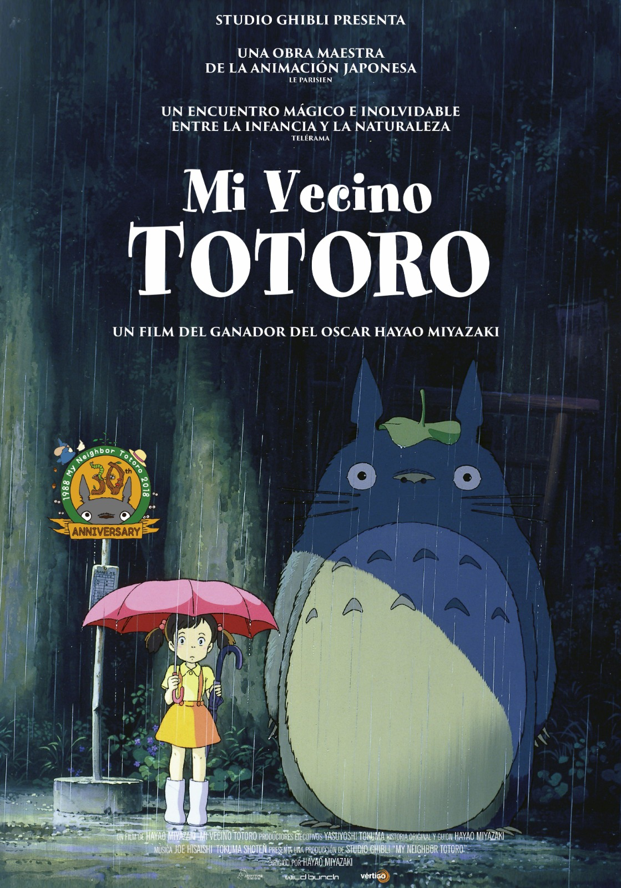
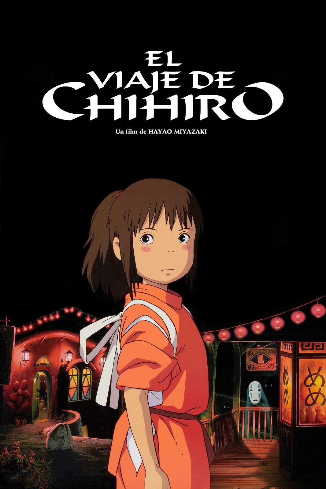
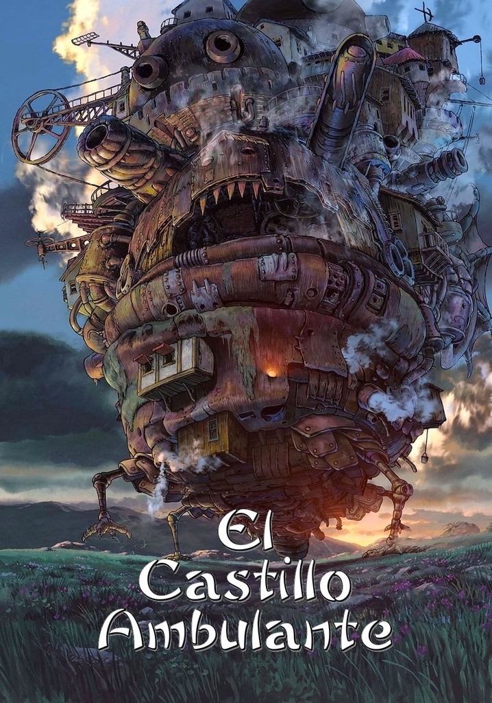
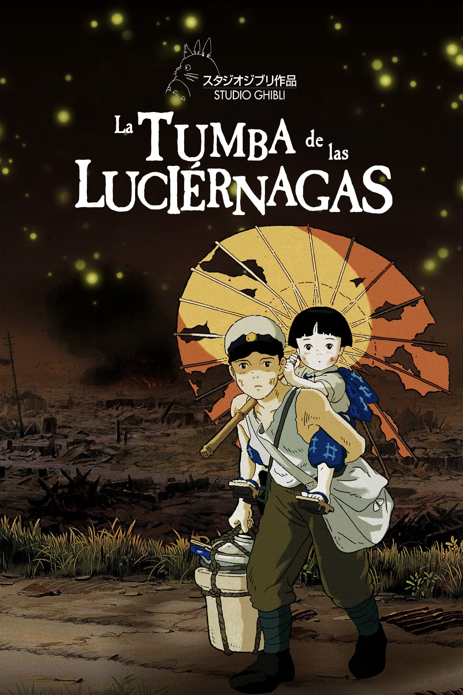
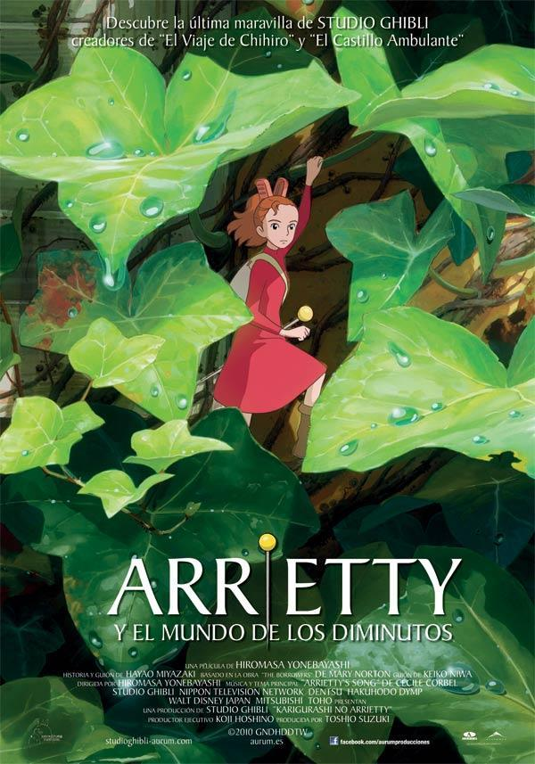
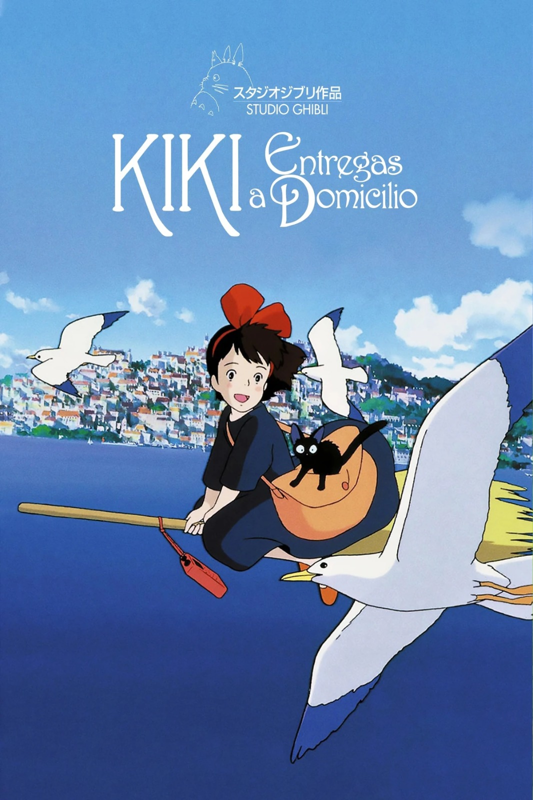

Películas Más Populares
-
Mi Vecino Totoro:
Esta mágica historia sigue a dos hermanas pequeñas que se mudan al campo y descubren a Totoro, una criatura amable y mágica que vive en el bosque cercano. A través de sus encuentros, las niñas aprenden sobre la importancia de la familia, la naturaleza y la imaginación en tiempos difíciles.
 -
El Viaje de Chihiro:
Chihiro es una niña que queda atrapada en un mundo espiritual lleno de espíritus y dioses. Para salvar a sus padres, quienes fueron transformados en cerdos, debe superar desafíos, hacer nuevos amigos y descubrir su valor. Esta película combina aventura, misterio y crecimiento personal en un mundo fantástico.
 -
El Castillo Ambulante:
La joven Sophie, bajo el hechizo de una bruja, se convierte en una anciana y busca refugio en el castillo ambulante de Howl, un mago poderoso pero enigmático. Juntos enfrentarán conflictos internos y externos mientras exploran temas de amor, guerra y transformación. Una historia llena de magia y emociones profundas.
 -
La Tumba de las Luciérnagas:
Una conmovedora y trágica historia basada en hechos reales sobre dos hermanos que intentan sobrevivir durante los estragos de la Segunda Guerra Mundial en Japón. La película refleja la inocencia perdida y los efectos devastadores de la guerra sobre la infancia y la familia.
 -
Arrietty:
Arrietty es una pequeña de apenas unos centímetros que vive oculta en una casa humana junto con su familia. Cuando un niño humano descubre su existencia, ambos deben aprender a confiar, enfrentando los riesgos de un mundo mucho más grande y peligroso.
 -
Kiki: Entregas a Domicilio:
Kiki es una joven bruja que, como rito de paso, debe vivir un año sola en una nueva ciudad. Usando su escoba para realizar entregas a domicilio, Kiki aprende sobre la independencia, la amistad y cómo superar la inseguridad personal.
